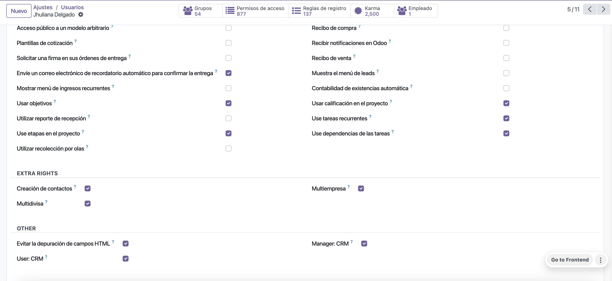
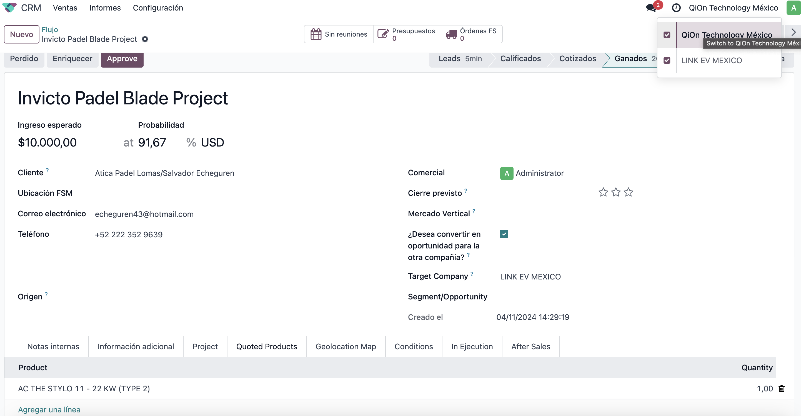
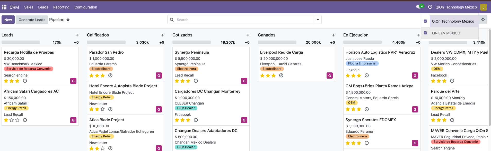

This module for Odoo 18, in the Stands CRM, optimizes lead management by adding custom fields and process sequences that align with the established workflow for the sales team. The module includes an approval system where the sales manager authorizes the advancement of leads at each stage of the process. It also features a visual process tracker, similar to a thermometer, to monitor the status of each opportunity and allow the team to know where each opportunity is in the process. An additional feature is that you can generate a won opportunity as a lead for another company, this works in multi-company.
- Copy crm_extended_3D module to addons folder
- Install the module normally like other modules
Settings -> user -> you select type of user access


- When converting a won opportunity into an opportunity for another company, you must have both companies selected and check that this won opportunity will go to the company you select next. Likewise, you must have the products sold listed with quantity, it is not necessary to manage the quote, just name them..

- You select both companies together and then change the status of the opportunity to won so that it becomes a lead in the other company...